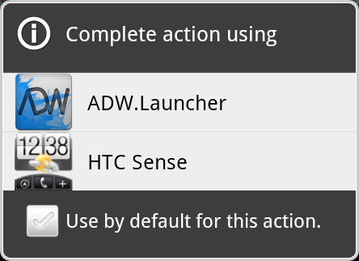

使用者按下 Home 時所看到的 Home Screen，其實就是 Home App 的畫面。
|
|
Home App 也常被稱做 Application Launcher 或 Launcher，因為 Android 官方預設的 Home App 就是 Launcher.apk。 |
Home Screen 可以擺放 App Widget 或 Launcher Activity 的圖示。
當然，系統內建的 Home App 也是可以替換的，習慣稱做 Home Replacement App。當系統有多個 Home App 時，按下 Home 就會提示要選用哪一個：

參考資料
-
如何第一次寫Android Launcher Switcher就上手 - NeiL- 點部落 (2012-02-03; PDF) - 對 Home App / Launcher 有詳細的說明。